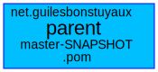

Projects parent POM for maven projects
Last Published: 2023-12-15
|
Version: master-SNAPSHOT
Mother of all
Overview
Dependencies Graph
Dependencies Graph Full
Project Documentation
Project Information
Project Reports
net.guilesbonstuyaux filtered dependencies Graph
